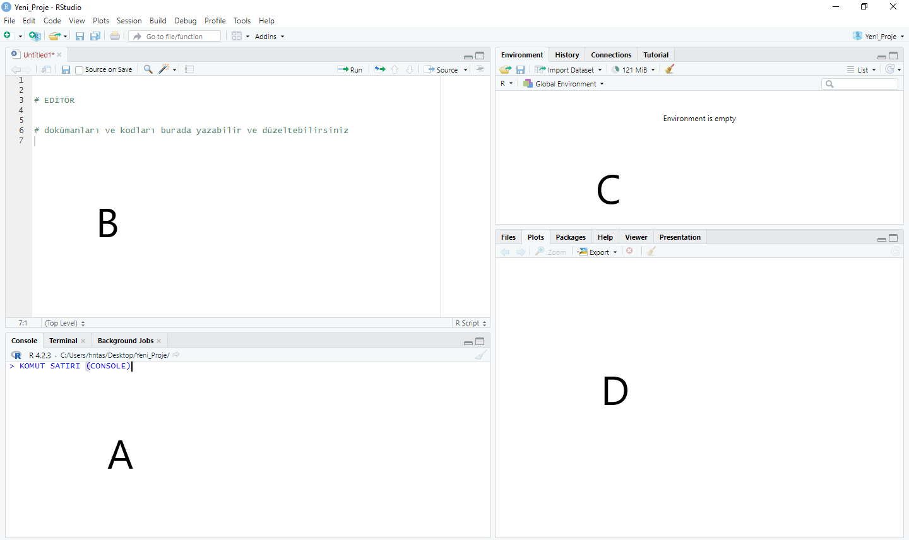
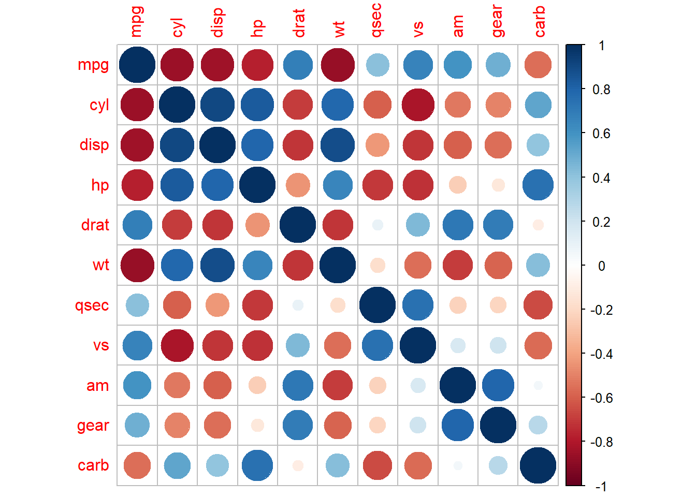
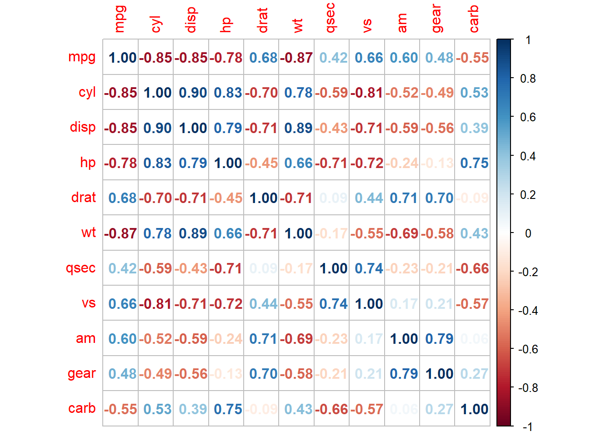
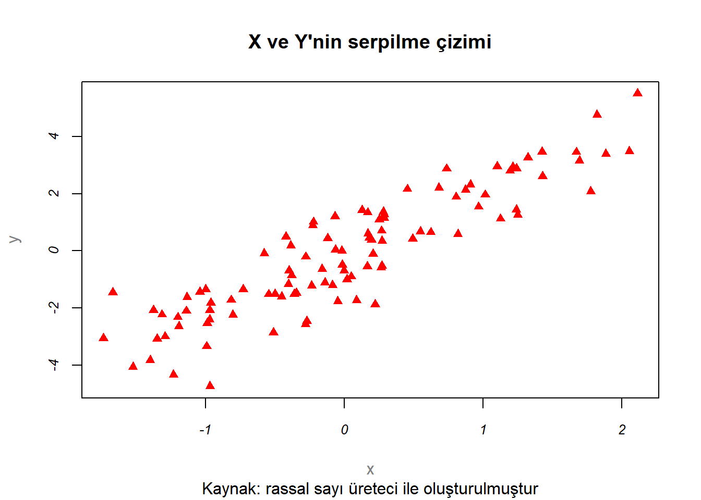
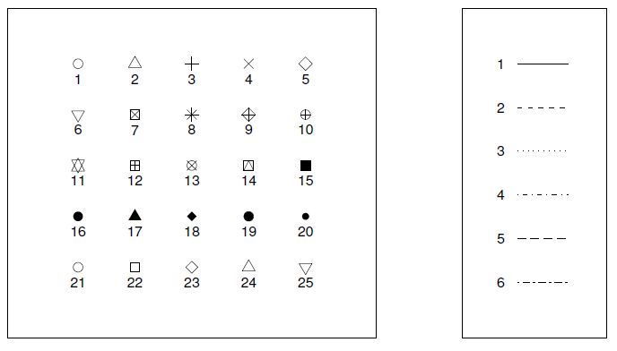
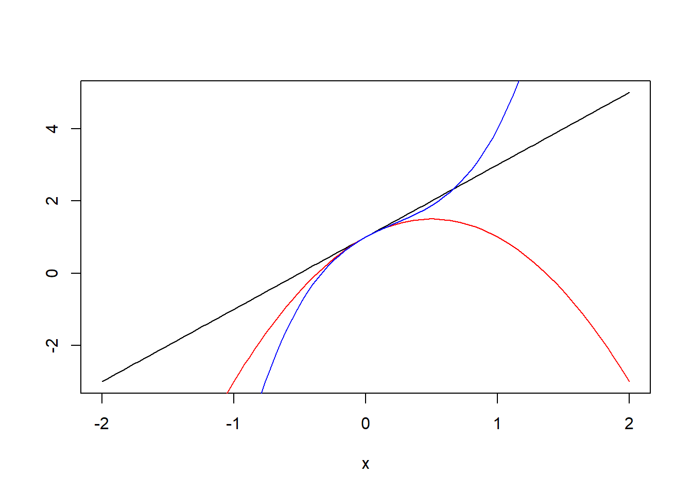
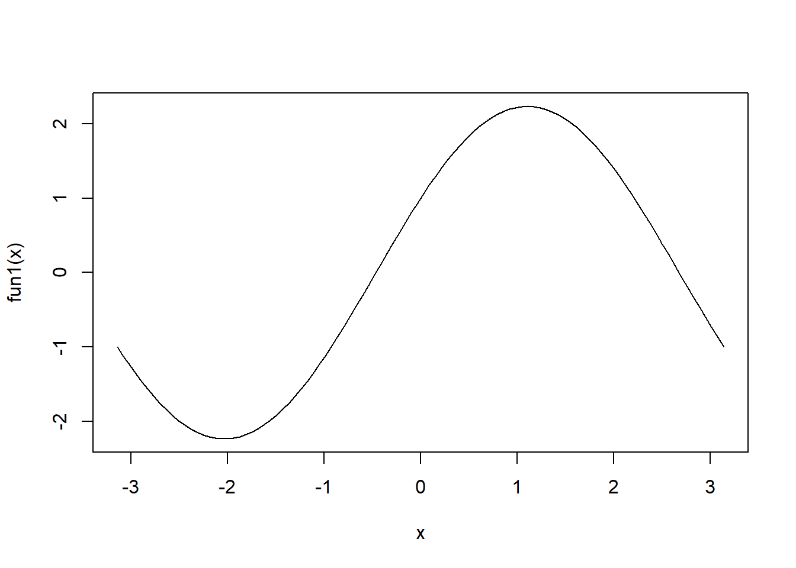
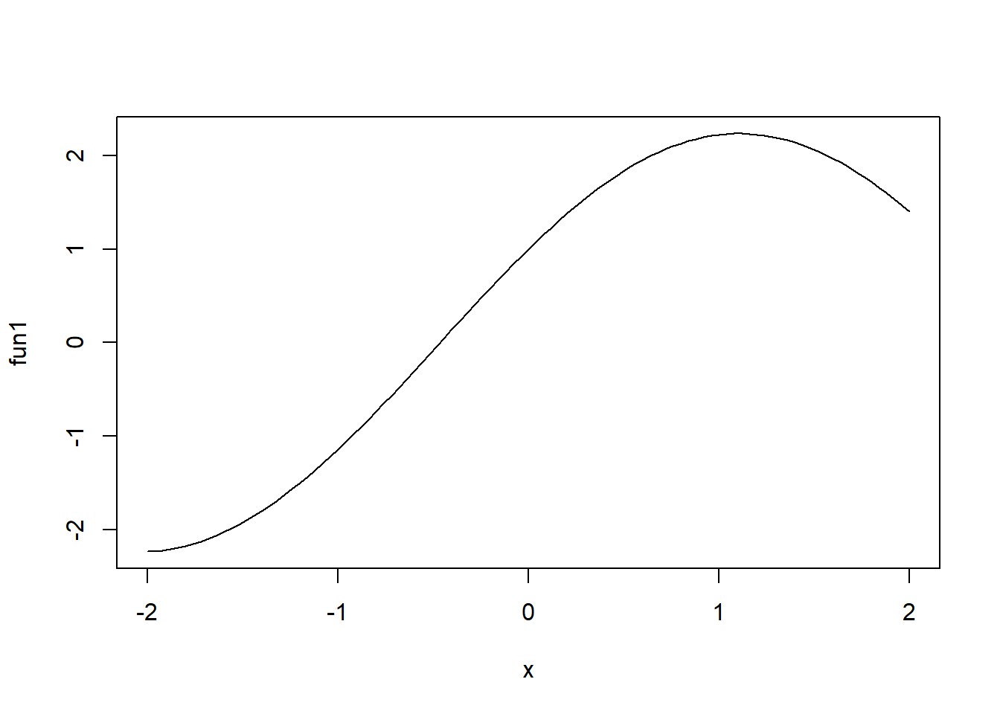

x = rnorm(50)
y = 1 + 2*x + rnorm(50)
plot(x, y)2 R Programına Giriş
R, veri analizi, grafik oluşturma ve istatistiksel hesaplamalar için tasarlanmış, açık kaynaklı bir programlama dili ve yazılım ortamıdır.1 Dünya çapında geniş bir kullanıcı ve geliştirici topluluğuna sahip olan R, katkıda bulunanların desteği ile sürekli olarak zenginleşen bir ekosistem oluşturmuştur. R Vakfı, R’yi salt bir istatistik sistemi olarak görmekten ziyade, istatistiksel tekniklerin uygulanabileceği esnek bir platform olarak tanımlamayı tercih etmektedir.2
R’nin gerçek gücü, özelleştirilebilir paket (kütüphane) yapısından gelir. R programının çekirdek dağıtımında yer alan temel paketlerle başlar ve CRAN (Comprehensive R Archive Network) gibi depolarda yer alan binlerce ek paket ile sınırları genişletilebilir.3 Bu paketler, en son istatistiksel tekniklerden veri işleme ve görselleştirme araçlarına kadar geniş bir yelpazeyi kapsar.
İzleyen altbölümde, önce R’nin temel kurulumunu nasıl yapacağımızı göreceğiz. Ardından, R’nin gücünü ve erişilebilirliğini artıran RStudio adlı kullanıcı dostu Entegre Geliştirme Ortamı’nın (IDE) kurulumu ve kullanımı üzerine yoğunlaşacağız. Bu kitapta kullanacağımız temel araç olan RStudio, R ile çalışmayı daha verimli ve keyifli hale getiren ekstra özellikler sunmaktadır.
2.1 Kurulum
R ve RStudio bilgisayarınızda yüklü değilse ya da eski versiyonları yüklüyse, aşağıdaki adımları takip ederek en güncel versiyonlarını yükleyebilirsiniz:
- Önce CRAN adresinden, https://cran.r-project.org/,
R’ın sisteminize uygun en son versiyonunu indirerek kurunuz. Kurulumdan sonra programı çalıştırdığımızdaRkomut penceresine (Console) ulaşabiliriz (bkz. Şekil 2.1)

Bu aşamada temel R fonksiyonlarını kullanmaya başlayabilirsiniz. Örneğin, aşağıdaki komutları sırasıyla yazarak simülasyonla oluşturduğumuz 50 gözlemli verilerin bir serpilme grafiğini çizebiliriz:
Bu programın çıktısı için bkz. Şekil 2.2.

Ancak standart R arayüzü (R GUI) ile kod yazmak, proje hazırlamak ve yönetmek kolay olmayabilir. Bu işleri kolaylaştırmak için yaygın olarak kullanılan bir arayüz RStudio programıdır. RStudio, R için popüler bir entegre geliştirme ortamı (IDE) olup, temel R arayüzüne göre çeşitli avantajlar sunar. Bunlar arasında gelişmiş kod düzenleme seçenekleri, paket yönetimi ve entegre yazılım geliştirme ortamı, proje yönetimi, R Markdown ve Quarto gibi dinamik rapor ve belge oluşturma seçenekleri ve geniş kullanıcı topluluğu ve desteği sayılabilir.
RStudioadresine, https://rstudio.com/, giderek bilgisayar sisteminize uygun programı kurunuz.

RStudio programını çalıştırdığımızda karşımıza dört pencere çıkmaktadır (bkz. Şekil 2.3):
A penceresi: Sol altta yer alana komut satırı (console) ile programı kullanmaya başlayabiliriz. Konsolun yanındaki sekmeler terminal, arkaplan işleri ve R Markdown gibi diğer RStudio özelliklerine erişim için kullanılır. Ayrıca hata mesajları ve uyarılar da bu pencerede görülür.
B penceresi: Sol üst tarafta yer alan pencere dosya düzenleyicisidir. Bu alanda çeşitli dokümanlar oluşturabilir, komutları bir R script dosyası içinde düzenleyebilir ve kaydedebiliriz. Editör, kod tamamlama, sözdizimi vurgulama ve kod parçalarını yürütme gibi özelliklere sahiptir. Örneğin, uzantısı .R olan bir kod dosyası (script) oluşturmak için File > New File > R script adımlarını takip edebilirsiniz. New file altında çok sayıda dosya biçimi dikkatinizi çekmiştir. Örneğin bu kitap R Quarto dosya biçimi (.qmd uzantılı) ile oluşturulmuştur.
C penceresi: RStudio programının sağ üst kısmındaki pencerede mevcut çalışma oturumuna ilişkin çeşitli bilgiler, veri kümeleri ve fonksiyonlar yer almaktadır (Environment, History). Burada hafızada yer alan nesnelerin bir listesi ve özellikleri ile geçmiş komutların bir listesi yer almaktadır.
D penceresi: Sağ alt pencerede ise farklı sekmelerde dosyaların bir listesi ve özellikleri, oluşturulan grafikler, aktif olan paketlerin listesi, yardım dosyaları ve diğer bilgiler yer almaktadır (bkz. Şekil 2.3).
RStudio sadece basit bir arayüz olmanın ötesinde karmaşık dokümanlar oluşturulması, yazılım projelerinin geliştirilmesi ve yönetilmesi gibi çok sayıda fonksiyona sahiptir. Bu özellikleriyle R ve Python gibi programlama araçlarını kullanan istatistikçi ve veri bilimciler arasında oldukça popülerdir.
2.2 RStudio Komut Satırı
Alt solda (bkz. Şekil 2.3, A penceresi) yer alan R Console penceresini kullanarak doğrudan komutlarınızı çalıştırabilirsiniz. Kısa komutlar için pratik olsa da ciddi analizler için bir R Script dosyası tutmanız daha sağlıklı olacaktır.
2.2.1 Aritmetik işlemler
Komut satırında basit aritmetik işlemler kolayca yapılabilir:
A = 5 + 3 # toplama
B = 5 - 3 # çıkarma
C = 5 * 3 # çarpma
D = 5 / 3 # bölme
E = 5 ^ 3 # üst alma Atama işlemi = ya da <- ile yapılabilir:
x <- A/B
print(x)[1] 4Bilgisayarlarda yaptığımız aritmetik işlemlerin sonucu beklediğimizden farklı olabilir. Örneğin \[ a = (9\times 8.1) + 8.1 \] işleminin sonucunun \(10\times 8.1 = 81\) olduğunu biliyoruz. Komut satırında bunu hesaplayalım:
a <- 9*8.1 + 8.1
print(a)[1] 81Daha yakından bakarsak
print(a, digits = 17)[1] 80.999999999999986bu sonucun tam olarak 81 olmadığını görebiliriz. Bunun nedeni bilgisayarlarda sayıların ikili sistem temsilindeki (floating point arithmetic) hatadır. Bu işlemde bu hata yaklaşık olarak
print(81-a, digits = 17)[1] 1.4210854715202004e-14yani \(1.4210854715202004\times 10^{-14}\), ya da
format(81-a, scientific = FALSE)[1] "0.00000000000001421085"kadardır. Bu, çoğu durumda gözardı edilebilse de yaptığınız hesaplamanın amacına bağlı olarak sorun yaratabilir. Örneğin, yazdığınız programda bir aritmetik işlemin sonucunu başka bir sonuçla karşılaştırmak istediğinizi düşünelim. Bunun için, daha sonra detaylı olarak inceleyeceğimiz R’ın mantıksal işlemcilerini kullanabiliriz. Örneğin elde ettiğimiz sonucun 81’e eşit olup olmadığını sorgulamak istediğimizi düşünelim:
81 == a # boşluksuz iki eşit işareti mantıksal kıyaslama yapar[1] FALSEBuna göre bildiğimiz tam sonuç (81) ile aritmetik işlemin sonucu (a) eşit değil. Aslında eşit olduklarını biliyoruz. Ancak bilgisayar temsilinde yaklaşık olarak eşittirler:
all.equal(81,a)[1] TRUEBurada öntanımlı tolerans düzeyi olan \(0.000000015\) kullanıldı. Yani aritmetik çözüm ile tam sonuç arasındaki fark tolerans düzeyinden küçüktür.
R’da makine hassasiyeti (\(\epsilon\)) ya da diğer bir deyişle makine epsilonu, çift duyarlıklı (double precision) kayan nokta sayılarının gösterebileceği en küçük pozitif sayıdır. Bu sayı, 1.0’a bu değeri eklediğinizde 1.0’dan farklı olarak algılanacak en küçük artışı ifade eder. R’da bu değer .Machine$double.eps ile sorgulanabilir:
print(.Machine$double.eps, digits=22)[1] 2.220446049250313080847e-16Örneğin bilgisayarda temsil edilebilen 1’den büyük olan en küçük sayıyı bulalım:
eps <- .Machine$double.eps
u <- 1 + eps
print(u, digits=22) [1] 1.000000000000000222045u>1[1] TRUENümerik hesaplamaların özellikleri için ?.Machine komutunu kullanarak yardım dosyasını inceleyebilirsiniz. IEEE 754 çift hassasiyetli sayı temsil standardına göre4 yaklaşık olarak \(2^{-1022}\) olarak tanımlı en küçük pozitif çift hassasiyetli sayı
.Machine$double.xmin[1] 2.225074e-308olarak tanımlıdır.
Hesaplamalarda diğer aritmetik işlemlerin de sorun yaratabileceği göz ardı edilmemelidir. Örneğin aşağıdaki çıkarma işlemini düşünelim:
b <- 10.2 - 10.1
print(b, digits = 17)[1] 0.099999999999999645Bunun tam sonuç olan \(0.10\) ile aynı olmadığı görülmektedir.
Alıştırma 81 sayısının ikili sistemde gösteriminin \((1010001)\) olduğunu, yani, \((81)_{10} = (1010001)_2\) yazılabileceğini gösteriniz. Ayrıca \(0.10\)’in ikili gösterimini bulunuz.
2.2.2 Yerleşik sabitler ve fonksiyonlar
R’da çok sayıda yerleşik sabitler, matematiksel fonksiyonlar, ve özel tanımlı nesneler bulunur. Örneğin \(\pi\) sayısı
pi[1] 3.141593ile tanımlanır.
R’da log() doğal logaritma olarak öntanımlıdır:
log(exp(1))[1] 1Üstel fonksiyon ve \(e\) sayısı için:
e <- exp(1)
print(e, digits = 3)[1] 2.72\(e\) sayısının noktadan sonraki 16 basamağını bulalım:
print(e, digits = 17)[1] 2.718281828459045110 ve 2 tabanlı logaritmalar için log10() ve log2() kullanılabilir:
log10(100)[1] 2log2(16)[1] 4Rda tanımlı diğer özel nesneler şunlardır: Inf ve -Inf artı ve eksi sonsuzu, NA (not available) kayıp değerleri, NaN (not a number) tanımsız bir işlem sonucunu ifade eder:
1/0[1] Inf-1/0[1] -Inf0/0[1] NaN2.3 R’da Nesneler
R’da her şey bir nesnedir (object) ve tüm işlemler bu nesneleri üzerinden yapılır. Nesne temelli yaklaşım, veri analizi ve istatistiksel modelleme için doğal bir çerçeve sunmaktadır. Nesneler, sayılar, vektörler, matrisler, veri çerçeveleri, fonksiyonlar gibi veri yapılarını temsil edebilir.
R nesne tanımında büyük-küçük harf ayırımı yapar, yani x ve X farklı nesnelerdir. Hafızadaki tüm nesneleri görmek için ls() komutu kullanılabilir:
ls() [1] "a" "A"
[3] "b" "B"
[5] "C" "D"
[7] "decimal_to_binary" "decimal_to_binary_fraction"
[9] "e" "E"
[11] "eps" "has_annotations"
[13] "u" "x" # ya da objects()Mevcut oturumda aktif olan nesnelerin listesine ulaşmak için RStudio’da sağ üst pencerede Environment sekmesine bakılabilir. rm(x) komutu x nesnesini hafızadan siler. Tüm nesneleri silmek istersek
rm(list=ls())
ls()komutunu kullanabiliriz.
Nesne isimleri rakamla başlayamaz, virgül ve boşluk içeremez (nokta içerebilir). Örnek olarak komut satırında aşagıdaki işlemleri yapınız:
2nesne <- c(10, 20)Bu işlem hata verecektir: Error: unexpected symbol in "2nesne". Nesne isimlerinin rakamla başlayamayacağını belirtmiştik.
nesne2 <- c(10, 20)
nesne2[1] 10 20Bunun dışında nesnelerin isimlendirilmesinde bir zorunluluk yoktur. Ancak isimlendirmelerde kodun anlaşılır ve kolayca düzenlenebilir olmasına dikkat etmek faydalı olacaktır. Nesnelerin isimlerinin içeriklerini açık ve anlaşılır şekilde yansıtmasına dikkat edilebilir. Nesnelerin isimlendirilmesinde yaygın kullanılan örnekler şunlardır:
# Örnek 1 (snake_case)
yeni_bir_nesne <- nesne2*5
yeni_bir_nesne[1] 50 100# Örnek 2 (CamelCase)
YeniBirNesne <- nesne2*5
YeniBirNesne[1] 50 100# Örnek 3
yeni.bir.nesne <- nesne2^3
yeni.bir.nesne[1] 1000 8000R’da temel nesne türleri şunlardır:
- Vektör: nümerik, karakter, mantıksal, tamsayı
- Matris
- Liste
- Veri çerçevesi (data frame)R’da bir nesnenin sınıfını ve türünü öğrenmek için class() ve typeof() fonksiyonları kullanılabilir:
class(yeni_bir_nesne)[1] "numeric"typeof(yeni_bir_nesne)[1] "double"2.4 Vektörler
Bir R vektörü (ya da bir atomik vektör) bir değer ya da bilgi topluluğudur. Sayısal ya da sayısal olmayan elemanlar içerebilir. Ancak sadece bir türde değer içerebilir: reel sayılar (doubles), tamsayılar (integers), karakterler (characters), mantıksal sonuçlar (logicals) ve kompleks sayılar.
R’da vektör ya da liste oluşturmanın en kolay yolu c() komutudur. Örneğin, aşağıdaki örnekte olduğu gibi c() fonksiyonuyla a ve b vektörlerini oluşturabiliriz:
a <- c(1,2,3,4,5) # bir sayısal vektör oluştur
typeof(a) # vektörün türü[1] "double"print(a)[1] 1 2 3 4 5b <- rep(1,5) # tüm elemanları 1 olan 5 elemanlı bir vektör oluştur
a+b[1] 2 3 4 5 6Vektör öğelerine isim verilebilir:
puanlar <- c("Ahmet" = 80, "Burcu" = 95, "Hasan" = 67)
print(puanlar)Ahmet Burcu Hasan
80 95 67 names(puanlar)[1] "Ahmet" "Burcu" "Hasan"2.4.1 Sayısal Vektörler
Sayısal vektörler, R’da veri analizi ve istatistiksel hesaplamalar için temel yapı taşlarından biridir. Bu vektörler, sayısal (nümerik) değerlerin dizilerini içerir ve genellikle hesaplamalar, analizler ve veri görselleştirmeler için kullanılır. Tüm elemanları tamsayı ya da reel sayılardan oluşan vektörlerdir.
Sayısal bir vektör oluşturmak için c() fonksiyonu kullanılır. Bu fonksiyon, içine yazılan değerleri birleştirerek bir vektör oluşturur. Örneğin:
sayisal_vektor <- c(2, 4, 6, 8, 10)
sayisal_vektor[1] 2 4 6 8 10Tüm elemanları sıfır olan 5 öğeli bir vektör oluşturmak istersek numeric() fonksiyonunu kullanabiliriz:
sifirlar <- numeric(5)
sifirlar [1] 0 0 0 0 0Sayısal vektörler, hem tamsayıları (integers) hem de reel sayıları (doubles) içerebilir. Tamsayılar için sonlarına L eklenir:
tamsayilar <- c(1L, 2L, 3L)
tamsayilar[1] 1 2 3typeof(tamsayilar)[1] "integer"reel_sayilar <- c(1.5, 2.5, 3.5)
reel_sayilar[1] 1.5 2.5 3.5typeof(reel_sayilar)[1] "double"Örnek: skor vektörü bir ürün için 100 üzerinden değerlendirmeleri göstersin:
skor <- c("Denek 1" = 80, "Denek 2" = 65, "Denek 3" = 78, "Denek 4" = 94, "Denek 5" = 100, "Denek 6" = NA, "Denek 7" = 55, "Denek 8" = 85, "Denek 9" = 88, "Denek 10" = 75)
print(skor) Denek 1 Denek 2 Denek 3 Denek 4 Denek 5 Denek 6 Denek 7 Denek 8
80 65 78 94 100 NA 55 85
Denek 9 Denek 10
88 75 Yaygın kullanılan sayısal vektör fonksiyonları şunlardır:
# vektörün eleman sayısı
length(a) # ya da NROW(a)[1] 5# sırala
sort(skor) # default: küçükten büyüğe, NA hariç Denek 7 Denek 2 Denek 10 Denek 3 Denek 1 Denek 8 Denek 9 Denek 4
55 65 75 78 80 85 88 94
Denek 5
100 # maximum
max(a)[1] 5# minimum
min(a)[1] 1# elemanların toplamı
sum(a)[1] 15# elemanların çarpımı
prod(a) [1] 120# Tüm elemanları a olan n-vektör: rep(a, n)
rep(1,10) [1] 1 1 1 1 1 1 1 1 1 1# seq(T): 1'den T'ye tamsayı dizisi
seq(10) [1] 1 2 3 4 5 6 7 8 9 10# seq(t,T) t'den T'ye tamsayı dizisi
seq(5,10)[1] 5 6 7 8 9 10# seq(t,T,s) t'den T'ye s artışla tamsayı dizisi
seq(1,10,2)[1] 1 3 5 7 9Bir vektörün elemanlarına ulaşmak için [ ] ile pozisyonu (indeksi) bildirmemiz gerekir. İlk elemanın indeksi 1’dir:
# 1nci eleman
skor[1]Denek 1
80 Belirli bir aralıktaki elemanları seçmek için:
# 2-4 elemanlar
skor[2:4]Denek 2 Denek 3 Denek 4
65 78 94 # son eleman
n <- length(skor)
skor[n]Denek 10
75 # son 3 eleman
skor[(n-3):n] Denek 7 Denek 8 Denek 9 Denek 10
55 85 88 75 Alıştırma skor[(n-3):n] yerine skor[n-3:n] kullanınız. Sonucu tartışınız.
skor[n-3:n]Denek 7 Denek 6 Denek 5 Denek 4 Denek 3 Denek 2 Denek 1
55 NA 100 94 78 65 80 Mantıksal ifadelerle belirli koşulları sağlayan elemanları seçmek mümkündür. Mantıksal vektörler izleyen bölümde ele alınmaktadır. Bu aşamada sayısal vektörlerle mantıksal karşılaştırmaların nasıl yapılabileceğine ilişkin bir örnek görelim:
sayisal_vektor <- c(2, 4, 6, 8, 10)
besten_buyuk_mu <- sayisal_vektor > 5
besten_buyuk_mu[1] FALSE FALSE TRUE TRUE TRUEBu örnekte bir sayısal vektör oluşturduk ve sayisal_vektor > 5 ifadesini kullanarak bu koşulun doğru ya da yanlış olup olmadığını ekrana yazdık. Bu koşulu sağlayan, yani beşten büyük olan elemanları görmek istersek köşeli parantezi kullanabiliriz:
sayisal_vektor[besten_buyuk_mu][1] 6 8 10Aynı sonuca
sayisal_vektor[sayisal_vektor > 5][1] 6 8 10komutu ile de ulaşılabilir.
2.4.2 Karakter Vektörleri
R’da karakter vektörleri, metin (string) tabanlı verileri saklamak için kullanılır. Her öğe, alfanümerik karakterler, boşluklar veya özel karakterler içeren bir metin parçasıdır. Bu vektörler, veri analizinde metin tabanlı veri işleme için temel yapı taşlarından biridir.
Bir karakter vektörü oluşturmak için c() fonksiyonu kullanılır. Her eleman çift tırnak işaretleri, " ", ya da ' ', içinde belirtilir:
isimler <- c("Ahmet", "Burcu", "Cem") # 3 elemanlı bir karakter vektörü
isimler[1] "Ahmet" "Burcu" "Cem" typeof(isimler)[1] "character"Boş bir karakter vektörü oluşturmak istersek character() fonksiyonunu kullanabiliriz:
kar <- character(5) # 5 elemanlı bir boş karakter vektörü oluştur
kar[1] "" "" "" "" ""Bir karakter dizisinin uzunluğunu öğrenmek için nchar() fonksiyonu kullanılır:
nchar("Merhaba Dünya")[1] 13Burada boşlukların da sayıldığına dikkat ediniz. Bu fonksiyonu bir karakter vektörüne de uygulayabiliriz:
# bir karakter vektöründeki ögelerin uzunluğu
nchar(isimler) [1] 5 5 3nchar(kar)[1] 0 0 0 0 0Karakter vektörleri üzerinde birçok işlem gerçekleştirilebilir. Örneğin, iki metin parçasını birleştirmek için paste() veya paste0() fonksiyonları kullanılır:
# iki ayrı metin parçasından yeni bir metin oluşturma
kelime1 <- "Merhaba"
kelime2 <- "Dünya"
tam_cumle <- paste(kelime1, kelime2)
tam_cumle[1] "Merhaba Dünya"Bir karakter dizisinden belirli bir bölümü ayıklamak için substr() fonksiyonu kullanılır. Eğer x bir karakter vektörü ise belirli bir aralıktaki karakterleri ayıklamak için
substr(x, start, stop)kullanılabilir. Örneğin,
substr("abcdef", 3, 4)[1] "cd"metin <- "R programlama dili"
altMetin <- substr(metin, 3, 13)
altMetin[1] "programlama"Metnin belirli bir kısmına değiştirmek istersek yine aynı komutu kullanabiliriz:
alf <- "abcdef"
substr(alf, 1, 2) <- "AB"Karakter vektörlerini alfabetik olarak sıralamak için sort() fonksiyonu kullanılır:
isimler <- c("Hasan", "Elif", "Zeynep", "Ahmet", "Çetin", "Burcu")
sort(isimler)[1] "Ahmet" "Burcu" "Çetin" "Elif" "Hasan" "Zeynep"Karakter dizilerinde desenleri (pattern) bulma ve değiştirme işlemleri için grep(), grepl(), gsub() ve sub() gibi fonksiyonlar kullanılır.
grep() fonksiyonu, belirli bir desen veya ifadeyi bir karakter vektörü içinde aramak için kullanılır ve eşleşen öğelerin indekslerini döndürür. Örnek olarak, diyelim ki, çeşitli meyve isimlerinin bulunduğu bir karakter vektörümüz var ve bu vektör içinde “elma” kelimesini içeren tüm öğeleri bulmak istiyoruz.
# Meyve isimlerini içeren bir karakter vektörü
meyveler <- c("elma", "muz", "portakal", "elma ve armut", "kivi", "armut")
# "elma" kelimesini içeren öğeleri arayalım
elma_indisleri <- grep("elma", meyveler)
# Eşleşen öğelerin indeksleri (sıra numaraları)
print(elma_indisleri)[1] 1 4Bu kod, meyveler vektöründe “elma” kelimesini içeren öğelerin sırasını bulur ve yazdırır. Bu durumda, “elma” ve “elma ve armut” ifadelerini içeren öğelerin sıra numaraları, 1 ve 4, çıktı olarak yazılmıştır.
grepl() fonksiyonu, bir karakter vektörü içinde belirli bir deseni veya metni arar ve her öğe için mantıksal bir değer (TRUE veya FALSE) döndürür. Bu, belirli bir desenin varlığını her öğe için kontrol etmek istediğinizde kullanışlıdır. Örneğin, çeşitli şehir isimlerini içeren bir karakter vektörünüz var ve bu şehir isimleri arasında “Ankara” kelimesini içerenleri bulmak istiyorsunuz.
# Şehir isimlerini içeren bir karakter vektörü
sehirler <- c("İstanbul", "Ankara", "İzmir", "Bursa", "Ankara ve Konya", "Antalya")
# "Ankara" kelimesini içeren öğeleri bulalım
ankara_var_mi <- grepl("Ankara", sehirler)
# Her öğe için mantıksal değerler
print(ankara_var_mi)[1] FALSE TRUE FALSE FALSE TRUE FALSEBu kod, sehirler vektöründe her öğe için “Ankara” kelimesinin varlığını kontrol eder ve her öğe için bir mantıksal değer (TRUE veya FALSE) döndürür. Örneğin, “Ankara” ve “Ankara ve Konya” ifadelerini içeren öğeler için TRUE değeri yazılır.
grepl() genellikle koşullu ifadelerde ya da veri alt kümesi oluşturmak için kullanılır. Örneğin, sadece “Ankara” içeren şehir isimlerini bir alt küme olarak almak istersek:
# Sadece "Ankara" içeren şehirleri filtreleyelim
ankara_iceren_sehirler <- sehirler[grepl("Ankara", sehirler)]
# Filtrelenmiş liste
print(ankara_iceren_sehirler)[1] "Ankara" "Ankara ve Konya"Bu kod, “Ankara” kelimesini içeren şehir isimlerini bir alt küme olarak döndürür. grepl fonksiyonu, verileri filtrelemek ve belirli koşullara göre alt kümeler oluşturmak için oldukça kullanışlıdır.
R’da sub() fonksiyonu, bir karakter dizisi içinde belirli bir deseni bulur ve bu deseni başka bir metinle değiştirir. Ancak, bu değişikliği yalnızca ilk eşleşme için yapar. Örneğin, bir cümle içindeki ilk “elma” kelimesini “armut” ile değiştirmek istiyorsak:
# Bir cümle
cumle <- "elma ve muz, elma ve kiraz"
# İlk "elma" kelimesini "armut" ile değiştirelim
yeni_cumle <- sub("elma", "armut", cumle)
# Yeni cümle
print(yeni_cumle)[1] "armut ve muz, elma ve kiraz"Bu kod, cumle içindeki ilk “elma” kelimesini “armut” ile değiştirir ve güncellenmiş cümleyi yazdırır. Yani, “elma ve muz, elma ve kiraz” olan cümle “armut ve muz, elma ve kiraz” olarak değişir.
Eğer metindeki tüm “elma” kelimelerini değiştirmek isterseniz, gsub() fonksiyonunu kullanabilirsiniz:
# Tüm "elma" kelimelerini "armut" ile değiştirelim
tumunu_degistir <- gsub("elma", "armut", cumle)
# Yeni cümle
print(tumunu_degistir)[1] "armut ve muz, armut ve kiraz"Bu örnekte, gsub() fonksiyonu cumle içindeki tüm “elma” kelimelerini “armut” ile değiştirdi. Yani, “elma ve muz, elma ve kiraz” olan cümle “armut ve muz, armut ve kiraz” olarak yeniden tanımlandı.
R programlama dilinde, düzenli ifadeleri (regular expressions) kullanarak karakter dizileri üzerinde ileri düzey işlemler yapmamıza olanak tanıyan regexpr() ve gregexpr() gibi çok sayıda fonksiyon vardır. Bu fonksiyonlar, metin içindeki desenleri (patterns) bulmak ve analiz etmek için oldukça güçlü araçlardır. regexpr() fonksiyonu, bir karakter dizisi içinde belirli bir düzenli ifadeyi arar ve ilk eşleşmenin konumunu döndürür. Ayrıca, eşleşmenin uzunluğu ve diğer ayrıntılar hakkında bilgi verir. Bu fonksiyon, metin içindeki belirli desenleri bulmanın yanı sıra, desenin metindeki konumu hakkında da detay sağlar.
gregexpr() ise, regexpr()’in genelleştirilmiş bir versiyonudur ve bir karakter dizisi içinde belirtilen düzenli ifadenin tüm eşleşmelerini bulur. Bu fonksiyon, metin içindeki tüm eşleşmelerin konumlarını ve uzunluklarını vererek, desenlerin metinde nasıl dağıldığını analiz etmemize olanak tanır.
Bu fonksiyonlar, metin analizi ve veri temizleme işlemlerinde oldukça yararlıdır, ancak düzenli ifadelerin kullanımı ve bu fonksiyonların detayları, başlı başına kapsamlı bir konudur. Daha fazla bilgi ve ileri düzey uygulamalar için, R’ın resmi belgelerine, yardım dosyalarına ve dokümantasyonlara ve ileri düzey kaynaklara bakılabilir.
2.4.3 Mantıksal vektörler
R’da TRUE ve FALSE yerleşik isimlerdir, kullanıcılar tarafından değiştirilemez.
Tüm öğeleri yanlış (FALSE) olan bir mantıksal vektör oluşturalım:
mantiksal <- logical(5)
mantiksal[1] FALSE FALSE FALSE FALSE FALSEYukarıda belirttiğimiz gibi, TRUE ve FALSE rezerve kelimelerdir.
# mantıksal işlemler, ==, !=, >, <, >=, <=
0 == 0[1] TRUE0 == 1[1] FALSEprint(a)[1] 1 2 3 4 5# 2'den büyük sayılar
a >= 3[1] FALSE FALSE TRUE TRUE TRUEArka planda bu kelimelerin karşılığı nümerik olarak TRUE (T) için 1 FALSE (F) için 0’dır. Örneğin,
logic1 <- c(TRUE, FALSE, TRUE)
logic1[1] TRUE FALSE TRUEas.numeric(logic1) [1] 1 0 1Mantıksal vektörlerle aritmetik işlem yapılırken dikkat edilmelidir. R bu durumda mantıksal sonuçları 0/1 değerlerinden oluşan sayısal vektöre dönüştürür. Örneğin,
# parantez içinde mantıksal karşılaştırma:
1-(a<=3)[1] 0 0 0 1 1Parantez içindeki işlemin önceliği vardır. Parantezi kaldırırsak
1-a<=3[1] TRUE TRUE TRUE TRUE TRUEsonucunu elde ederiz. Bu istediğimiz sonuç olmayabilir.
Mantıksal işlemcileri, yani, ==, >, <, >=, <= ,!=, kullanarak yeni vektörler oluşturabiliriz. Örneğin, yukarıda oluşturduğumuz skor nesnesinde
skor Denek 1 Denek 2 Denek 3 Denek 4 Denek 5 Denek 6 Denek 7 Denek 8
80 65 78 94 100 NA 55 85
Denek 9 Denek 10
88 75 70’ten küçük değerleri bulalım:
dusuk_skorlar <- (skor < 70)
dusuk_skorlar Denek 1 Denek 2 Denek 3 Denek 4 Denek 5 Denek 6 Denek 7 Denek 8
FALSE TRUE FALSE FALSE FALSE NA TRUE FALSE
Denek 9 Denek 10
FALSE FALSE Değerlendirme notu 70’den küçük olanları bulmak istersek mantıksal ifadeleri vektör elemanlarına ulaşmakta kullanabiliriz (logical subscripting). Yukarıda oluşturduğumuz mantıksal vektörden hareketle:
skor[dusuk_skorlar]Denek 2 <NA> Denek 7
65 NA 55 Kayıp gözlemlerin mantıksal ifadelerde dikkate alınmadığını ve çıktıda yer verildiğini görüyoruz.
Alıştırma skor vektöründe kayıp değerleri NA bulunuz ve yeni bir vektör yaratarak bu değerleri siliniz.
Çözüm Bunun en basit yolu temel R’da yer alan which() ve is.na() fonksiyonlarını kullanmaktır. is.na() fonksiyonu NA elemanlar için mantıksal değer TRUE olmayanlar için FALSE değerini içeren bir mantıksal vektör oluşturur.
# öğe NA mı ?
is.na(skor) Denek 1 Denek 2 Denek 3 Denek 4 Denek 5 Denek 6 Denek 7 Denek 8
FALSE FALSE FALSE FALSE FALSE TRUE FALSE FALSE
Denek 9 Denek 10
FALSE FALSE which() ise NA olan elemanların pozisyonunu (indeks bilgisini) verir.
# NA'nın konumunu bul
which(is.na(skor))Denek 6
6 Ya da NA olmayan elemanların indeks bilgisini oluşturmak istersek:
# sayısal öğelerin konumu
which(!is.na(skor)) Denek 1 Denek 2 Denek 3 Denek 4 Denek 5 Denek 7 Denek 8 Denek 9
1 2 3 4 5 7 8 9
Denek 10
10 Burada !is.na() kayıp olmayan elemanları seçer (! olumsuzlama operatörüdür). Şimdi NA olan elemanı dışlayıp yeni bir vektör içinde kaydedelim:
skor2 <- skor[which(!is.na(skor))]
skor2 Denek 1 Denek 2 Denek 3 Denek 4 Denek 5 Denek 7 Denek 8 Denek 9
80 65 78 94 100 55 85 88
Denek 10
75 Aslında which() bu örnekte gereksizdir (ara adımları istemiyorsak):
skor2 <- skor[!is.na(skor)]
skor2 Denek 1 Denek 2 Denek 3 Denek 4 Denek 5 Denek 7 Denek 8 Denek 9
80 65 78 94 100 55 85 88
Denek 10
75 Kayıp gözlemleri silmek için tasarlanmış olan na.omit() fonksiyonu da kullanılabilir.
2.5 Matrisler
R’da matris oluşturmanın en kolay yolumatrix()fonksiyonudur. Örneğin,skorvektöründen hareketle \(10\times 1\) matris oluşturalım:
A <- matrix(data = skor, nrow=10, ncol=1, byrow = FALSE, dimnames = NULL)
print(A) [,1]
[1,] 80
[2,] 65
[3,] 78
[4,] 94
[5,] 100
[6,] NA
[7,] 55
[8,] 85
[9,] 88
[10,] 75dim(A) # matrisin boyutları satır x sütun[1] 10 1- İstersek satır ve sütunları isimlendirebiliriz:
rownames(A) <- names(skor)
colnames(A) <- "skor"
print(A) skor
Denek 1 80
Denek 2 65
Denek 3 78
Denek 4 94
Denek 5 100
Denek 6 NA
Denek 7 55
Denek 8 85
Denek 9 88
Denek 10 75- Matrisin boyutlarını değiştirebiliriz:
B <- matrix(data=1:10, nrow=5, ncol=2, byrow=FALSE, dimnames=NULL)
print(B) [,1] [,2]
[1,] 1 6
[2,] 2 7
[3,] 3 8
[4,] 4 9
[5,] 5 10BB <- matrix(data=1:10, nrow=5, ncol=2, byrow=TRUE, dimnames=NULL)
print(BB) [,1] [,2]
[1,] 1 2
[2,] 3 4
[3,] 5 6
[4,] 7 8
[5,] 9 10t()fonksiyonu ile matrisin devriği (transpose) bulunabilir:
t(B) [,1] [,2] [,3] [,4] [,5]
[1,] 1 2 3 4 5
[2,] 6 7 8 9 10- Matrislerle mantıksal işlemler yapılabilir:
B > 5 [,1] [,2]
[1,] FALSE TRUE
[2,] FALSE TRUE
[3,] FALSE TRUE
[4,] FALSE TRUE
[5,] FALSE TRUEwhich(B>5)[1] 6 7 8 9 10BB > 5 [,1] [,2]
[1,] FALSE FALSE
[2,] FALSE FALSE
[3,] FALSE TRUE
[4,] TRUE TRUE
[5,] TRUE TRUEwhich(BB>5)[1] 4 5 8 9 10Pozisyonun sütun bazında belirlendiğine (yani matris sütun bazında vektörize edilse) dikkat ediniz.
- Boş (sıfırlar) matrisi
zeros <- matrix(data = 0, nrow = 5, ncol = 5)
zeros [,1] [,2] [,3] [,4] [,5]
[1,] 0 0 0 0 0
[2,] 0 0 0 0 0
[3,] 0 0 0 0 0
[4,] 0 0 0 0 0
[5,] 0 0 0 0 0- Matris oluşturmanın başka bir yolu da mevcut vektörlerin birleştirilmesidir. Bunun için
cbindverbindkullanılabilir. Örneğin,
x <- cbind(b,a)
x b a
[1,] 1 1
[2,] 1 2
[3,] 1 3
[4,] 1 4
[5,] 1 5#
cbind(1,1:5) [,1] [,2]
[1,] 1 1
[2,] 1 2
[3,] 1 3
[4,] 1 4
[5,] 1 5- Bireylerin cinsiyetini içeren bir karakter vektörü oluşturalım:
cinsiyet <- c("Kadın", "Erkek", "Kadın", "Kadın", "Erkek", "Kadın", "Erkek", "Erkek", "Kadın", "Kadın")
print(cinsiyet) [1] "Kadın" "Erkek" "Kadın" "Kadın" "Erkek" "Kadın" "Erkek" "Erkek" "Kadın"
[10] "Kadın"table(cinsiyet)cinsiyet
Erkek Kadın
4 6 - Burada
cinsiyetbir kategorik (ya da kesikli) değişkendir. Şimdi skor ve cinsiyet bilgisini bir araya getirelim ve bunaxismini verelim:
x<- cbind(skor, cinsiyet)
x skor cinsiyet
Denek 1 "80" "Kadın"
Denek 2 "65" "Erkek"
Denek 3 "78" "Kadın"
Denek 4 "94" "Kadın"
Denek 5 "100" "Erkek"
Denek 6 NA "Kadın"
Denek 7 "55" "Erkek"
Denek 8 "85" "Erkek"
Denek 9 "88" "Kadın"
Denek 10 "75" "Kadın" - Yukarıda
x’in tüm elemanları karakter tipine zorlandı. Bunun nedeni R’da vektör ve matrislerin sadece tek tip (sayısal, karakter, mantıksal, vs.) değere sahip olabilmesidir.
2.6 Listeler
- Bir
Rlistesi farklı türlerde, uzunluk ve boyutlarda nesneleri içerebilen bir nesneler topluluğudur.
# bir R listesi oluştur
liste1 <- list(numaralar = seq(10,20,3),
isimler = c("Ahmet", "Burcu", "Hasan"),
birim_mat = diag(4)
)
#
liste1 $numaralar
[1] 10 13 16 19
$isimler
[1] "Ahmet" "Burcu" "Hasan"
$birim_mat
[,1] [,2] [,3] [,4]
[1,] 1 0 0 0
[2,] 0 1 0 0
[3,] 0 0 1 0
[4,] 0 0 0 1- Liste içindeki nesnelerin isimleri için
names()komutu kullanılabilir:
names(liste1)[1] "numaralar" "isimler" "birim_mat"- Bir listenin belirli bir bileşenine
liste_ismi$bilesen_ismiile ulaşılabilir.
# örnek
liste1$numaralar[1] 10 13 16 19liste1$numaralar[1][1] 10dim(liste1$birim_mat)[1] 4 42.7 Veri Çerçeveleri (Data Frames)
R’da en temel nesnelerden biri veri çerçevesi (data frame)’dir. Belirli özelliklere sahip bir liste olarak düşünülebilir.Aynı uzunlukta ve farklı tipte vektörleri bir araya getirmemize olanak tanır. Örneğin
veri1 <- data.frame(skor, cinsiyet)
veri1 skor cinsiyet
Denek 1 80 Kadın
Denek 2 65 Erkek
Denek 3 78 Kadın
Denek 4 94 Kadın
Denek 5 100 Erkek
Denek 6 NA Kadın
Denek 7 55 Erkek
Denek 8 85 Erkek
Denek 9 88 Kadın
Denek 10 75 Kadınnames(veri1)[1] "skor" "cinsiyet"str(veri1)'data.frame': 10 obs. of 2 variables:
$ skor : num 80 65 78 94 100 NA 55 85 88 75
$ cinsiyet: chr "Kadın" "Erkek" "Kadın" "Kadın" ...summary(veri1) skor cinsiyet
Min. : 55 Length:10
1st Qu.: 75 Class :character
Median : 80 Mode :character
Mean : 80
3rd Qu.: 88
Max. :100
NA's :1 # örnek veri seti simülasyonu
set.seed(123)
x1 = rnorm(100, mean=5, sd=1.2)
x2 = rnorm(100, mean=0, sd=0.8)
grup = sample(c("A", "B", "C"), 100, replace = TRUE)
y = 2 + 2*x1 - 3*x2 + 5*(grup=="B") + 8*(grup=="C") + rnorm(100)
#
veri2 <- data.frame(y, x1, x2, grup) # veri çerçevesini oluştur
head(veri2) y x1 x2 grup
1 18.60331 4.327429 -0.56832525 C
2 18.44227 4.723787 0.20550697 C
3 24.42217 6.870450 -0.19735350 C
4 13.84834 5.084610 -0.27803408 A
5 15.55670 5.155145 -0.76129485 A
6 24.90853 7.058078 -0.03602218 C2.8 Temel Programlama
2.8.1 Mantıksal işlemler
- Ve işlemcisi:
&
# doğru ve doğru = doğru
TRUE & TRUE [1] TRUE# doğru ve yanlış = yanlış
TRUE & FALSE [1] FALSE# yanlış ve doğru = yanlış
FALSE & TRUE [1] FALSE# yanlış ve yanlış = yanlış
FALSE & FALSE [1] FALSEx <- c(4, 8)
x > 3 & x < 6[1] TRUE FALSE- Veya işlemcisi:
|
# doğru veya doğru = doğru
TRUE | TRUE[1] TRUE# doğru veya yanlış = doğru
TRUE | FALSE[1] TRUE# yanlış veya doğru = doğru
FALSE | TRUE[1] TRUE# yanlış veya yanlış = yanlış
FALSE | FALSE[1] FALSEx <- c(4, 8)
x > 3 | x < 6[1] TRUE TRUE!(X & Y)ile!X | !Yaynı sonucu verir.!(X | Y)ile!X & !Yaynı sonucu verir.Mantıksal işlemleri kullanarak bir veri çerçevesinin satırları (gözlemler) seçilebilir:
# grup = A olanları seç
veri2_A <- veri2[grup == "A", ]
head(veri2_A) y x1 x2 grup
4 13.848335 5.084610 -0.27803408 A
5 15.556703 5.155145 -0.76129485 A
10 8.899622 4.465206 0.73519729 A
14 10.731512 5.132819 -0.04444957 A
15 10.155900 4.332991 0.41552576 A
16 15.951850 7.144296 0.24092269 A# subset() fonksiyonu ile
head(subset(veri2, grup=="A")) y x1 x2 grup
4 13.848335 5.084610 -0.27803408 A
5 15.556703 5.155145 -0.76129485 A
10 8.899622 4.465206 0.73519729 A
14 10.731512 5.132819 -0.04444957 A
15 10.155900 4.332991 0.41552576 A
16 15.951850 7.144296 0.24092269 A# grup = A ve grup = B olanları seç
veri2_AB <- veri2[grup == "A" | grup == "B", ]
head(veri2_AB) y x1 x2 grup
4 13.848335 5.084610 -0.2780341 A
5 15.556703 5.155145 -0.7612949 A
7 18.594695 5.553099 -0.6279236 B
9 15.817540 4.175777 -0.3041812 B
10 8.899622 4.465206 0.7351973 A
11 21.393180 6.468898 -0.4602776 B# %in% işlemcisi ile
# grup = A ve grup = B olanları seç
veri2_AB <- veri2[grup %in% c("A", "B"), ]
head(veri2_AB) y x1 x2 grup
4 13.848335 5.084610 -0.2780341 A
5 15.556703 5.155145 -0.7612949 A
7 18.594695 5.553099 -0.6279236 B
9 15.817540 4.175777 -0.3041812 B
10 8.899622 4.465206 0.7351973 A
11 21.393180 6.468898 -0.4602776 B- Veri çerçevesinden rassal olarak bazı gözlemlerin seçilmesi:
# veri2'den 10 satırın rassal seçimi
set.seed(99)
orneklem1 <- sample(1:nrow(veri2), 10, replace = FALSE)
orneklem1 # satır numaraları [1] 48 33 44 22 62 32 13 20 31 68# veri2'den satırları çek
veri2[orneklem1, ] y x1 x2 grup
48 8.876980 4.440014 0.55033342 A
33 23.299257 6.074151 0.03298634 C
44 22.141873 7.602747 -1.21173412 A
22 13.531749 4.738430 -0.75797969 A
62 14.647966 4.397212 -0.83934161 A
32 15.229202 4.645914 0.36120324 B
13 21.869445 5.480926 -1.29430617 B
20 13.544229 4.432650 -0.81930303 A
31 8.205689 5.511757 1.15564069 A
68 18.665672 5.063605 -0.38702450 B- Benzer şekilde bir veri setinden bootstrap örneklemleri oluşturulabilir:
satirno <- sample(1:nrow(veri2), nrow(veri2), replace = TRUE)
boot1 <- veri2[satirno, ]
head(boot1) y x1 x2 grup
9 15.81754 4.175777 -0.30418122 B
82 16.91902 5.462336 1.01054814 C
88 19.94786 5.522218 0.06778983 C
30 22.04715 6.504578 -0.05704647 B
86 12.84222 5.398138 -0.15774072 A
84 24.63868 5.773252 -0.69241029 C2.8.2 Koşullu işlem
- Koşullu işlemleri
ifelsekomutlarını kullanarak yapabiliriz. Kullanım örneği:
if (condition) {
....
} else {
....
}- Nümerik örnek:
a <- seq(1,10,1)
b <- 85
c <- "YTU"
if (typeof(b)=="double" | typeof(b)=="integer") {
print(b) } else {
print("This is not a numeric object")
}[1] 85x <- -10
if (x < 0) {
print("x negatif bir sayıdır")
} else if (x == 0) {
print("x sıfıra eşittir")
} else {
print("x pozitif bir sayıdır")
}[1] "x negatif bir sayıdır"2.8.3 Döngüler
- Döngü içinde işlem yapmak için
forkomutunu kullanabiliriz. Kullanım şablonu:
for (dongu_degiskeni in vektor) {
}Burada dongu_degiskeni sırasıyla vektor içindeki değerleri almaktadır. Örneğin,
for (i in 1:5) {
print(i)
}- Nümerik örnek:
for (i in 1:10){
if (i<5) {print(i^2)}
else {print(sqrt(i))}
}[1] 1
[1] 4
[1] 9
[1] 16
[1] 2.236068
[1] 2.44949
[1] 2.645751
[1] 2.828427
[1] 3
[1] 3.162278- Döngüler üç şekilde oluşturulabilir:
- öğeler üzerinde:
for (x in A) - nümerik konum üzerinde:
for (i in seq_along(A)) - isimler üzerinde:
for (nm in names(A))
- öğeler üzerinde:
- Döngüleri hızlandırmanın bir yolu nümerik indisler üzerinde döngüyü çalıştırmak ve ve döngüden önce çıktı için boş bir nesne oluşturmaktır:
sonuc <- numeric(length(A))
for (i in seq_along(A)) {
sonuc[i] <- sqrt(A[i])
}2.8.4 Fonksiyonel İşlemler
lapply()bir liste ya da vektörün tüm elemanlarına bir fonksiyonu uygular ve aynı uzunlukta bir çıktı içinde saklar. Böylece işlemleri döngü içinde yapmaya gerek kalmayabilir.Örnek:
mtcarsveri setindeki değişkenlerin aritmetik ortalamalarını bulunuz. Bir data frame aynı zamanda bir liste olduğundanlapply()kullanılabilir:
liste_ort <- lapply(mtcars, mean) #
unlist(liste_ort) mpg cyl disp hp drat wt qsec
20.090625 6.187500 230.721875 146.687500 3.596563 3.217250 17.848750
vs am gear carb
0.437500 0.406250 3.687500 2.812500 lapply()içinde kendi yazdığımız fonksiyonları da kullanabiliriz.Örnek: bir veri çerçevesinin sütunlarındaki kayıp gözlemleri (NA) sayınız. Veri setimiz aşağıdaki gibi olsun:
set.seed(456)
x1 <- runif(100)
x2 <- runif(100)
x3 <- rnorm(100)
x4 <- rnorm(100)
napoz1 <- sample(1:100, sample(1:10, 1), replace = FALSE)
napoz2 <- sample(1:100, sample(1:10, 1), replace = FALSE)
x1[napoz1] <- NA
x2[napoz2] <- NA
data <- data.frame(x1, x2, x3, x4)
head(data) x1 x2 x3 x4
1 0.0895516 0.2530410 0.11815133 0.293886215
2 0.2105123 0.1337840 0.86990262 1.052402224
3 0.7329553 0.3987728 -0.09193621 -0.006435601
4 0.8521335 0.2829084 0.06889879 -0.404523473
5 0.7883979 0.7513620 -1.68242675 -0.080917045
6 0.3319600 0.8058037 1.11695555 -1.072424293na_sayisi <- function(x) {
sum(is.na(x))
}
unlist(lapply(data, na_sayisi))x1 x2 x3 x4
8 4 0 0 # ya da daha basit olarak
unlist(lapply(data, function(x) sum(is.na(x))))x1 x2 x3 x4
8 4 0 0 sapply()vevapply()fonksiyonellerilapply()gibi çalışır. Ancak çıktı olarak atomik vektör oluştururlar
# data sütunları nümerik mi?
sapply(data, is.numeric) x1 x2 x3 x4
TRUE TRUE TRUE TRUE # data sütunlarında NA sayısı
sapply(data, function(x) sum(is.na(x)))x1 x2 x3 x4
8 4 0 0 # vapply() için çıktı vektörünün türünü bildirmemiz gerekir
vapply(data, is.numeric, logical(1)) x1 x2 x3 x4
TRUE TRUE TRUE TRUE # data sütunlarında NA sayısı
vapply(data, function(x) sum(is.na(x)), numeric(1))x1 x2 x3 x4
8 4 0 0 sapply() interaktif uygulamalarda vapply() ise programlamada önerilir.
- Matris veya çok boyutlu diziler için
apply()kullanılabilir:
# 200 x 5 boyutlu bir uniform matris oluştur
set.seed(789)
X <- matrix(runif(1000), ncol = 5)
colnames(X) <- letters[1:5]
head(X) a b c d e
[1,] 0.69989436 0.29265239 0.0007847089 0.1423423 0.85313937
[2,] 0.09349887 0.09354572 0.5411858680 0.9821530 0.05266862
[3,] 0.01188682 0.34495804 0.0488849813 0.1806375 0.67594448
[4,] 0.59160635 0.21537353 0.3234363657 0.9168293 0.45698617
[5,] 0.49214944 0.72085409 0.1213557085 0.8762951 0.30602751
[6,] 0.02016358 0.92697327 0.9060655029 0.9215866 0.31179128# X'in sütun ortalamalarını bul
apply(X, 2, mean) # satırlar için margin=1, sütunlar için ise 2 a b c d e
0.4848826 0.5282805 0.5045356 0.4875399 0.5228984 2.9 R Fonksiyonları
R’da bütün işlemler fonksiyonlarla yapılır. Tipik birRfonksiyonu girdiler (argümanlar) ve çıktılardan oluşur.Örneğin
mean()fonksiyonuskorgirdisiyle çalıştırılırsa aritmetik ortalamalar elde edilir:
mean(skor)[1] NABurada çıktının ortalama değil NA olması öğelerden birinin NA olmasından kaynaklanır. Kayıp gözlemleri dışlayarak ortalamayı hesaplayalım:
mean(skor, na.rm = TRUE) # ya da mean(skor, TRUE)[1] 80Kullanıcı girmezse na.rm = FALSE değerini alır ve sonuç NA olur.
Benzer şekilde, örneklem standart sapması için
sd(skor, na.rm = TRUE)[1] 13.98213Bir R fonksiyonunun girdilerini görmek istersek args() komutunu kullanabiliriz:
args(sd) function (x, na.rm = FALSE)
NULLFonksiyonu ekrana yazdırmak istersek parantez olmadan ismini yazmamız yeterli olur:
sdfunction (x, na.rm = FALSE)
sqrt(var(if (is.vector(x) || is.factor(x)) x else as.double(x),
na.rm = na.rm))
<bytecode: 0x00000270682624a8>
<environment: namespace:stats>Kendi fonksiyonlarımızı yazmak için function() komutunu kullanabiliriz. Bu fonksiyon aşağıdaki sözdizimine sahiptir:
fonksiyon_ismi <- function(girdi1, girdi2) {
... işlemler ...
}Örnek: Bir sayının tek mi çift mi olduğunu bulan bir fonksiyon yazalım:
tek_cift <- function(x) {
if (x == 0) {
print("Girdiğiniz sayı sıfırdır!")
} else if (x %% 2 == 0) {
print("Çift sayı")
} else {
print("Tek sayı")
}
}# tek_cift() fonksiyonunu kullanabiliriz
tek_cift(4) [1] "Çift sayı"tek_cift(5L) [1] "Tek sayı"R fonksiyonları polimorfiktir; yani aynı fonksiyon, farklı tipte nesnelerle çalıştığında farklı davranışlar gösterebilir. Bu özellik, print(), summary() veya plot() gibi genel işlevlerin, farklı tipte nesneler için özelleştirilmiş çıktılar üretmesini sağlar.
2.10 R Paketleri
Paketler ya da kütüphaneler belirli bir görevi yerine getirmek için tasarlanmış fonksiyonlardan oluşur. R kurulumuyla gelen temel paketler şunlardır:
rownames(installed.packages(priority="base")) [1] "base" "compiler" "datasets" "graphics" "grDevices" "grid"
[7] "methods" "parallel" "splines" "stats" "stats4" "tcltk"
[13] "tools" "utils" R programının güçlü yanlarından biri kullanıcılar tarafından yazılmış paketlerin yüklenmesiyle geliştirilebilmesidir.
Örneğin, {corrplot} paketi korelasyon matrisini görselleştirir:
install.packages("corrplot", repos='http://cran.us.r-project.org')Detaylar için bkz https://cran.r-project.org/web/packages/corrplot/index.html.
- Alternatif olarak aynı işlem
RStudiomenüsünden de yapılabilir:Tools>InstallPackagesilgili pencerede “{corrplot}” paket ismini yazmamız gerekir. - Paketi kullanabilmek için önce yüklememiz daha sonra ise aktif hale getirmemiz gerekir:
library(corrplot)
kor_matris <- cor(mtcars)
corrplot(kor_matris)
Komut satırında ?corrplot yazarak yardım dosyasını inceleyebiliriz (detaylı dokümantasyon dosyaları için help(package = "corrplot") komutu kullanılabilir) . Korelasyon matrisini nümerik değerleri kullanarak da görselleştirebiliriz. Yardım dosyasında da görüleceği gibi method="number" opsiyonu bu amaç için kullanılabilir:
corrplot(kor_matris, method = "number")
Pakete ilişkin örnekleri çalıştırmak için komut satırında aşağıdaki kodu çalıştırınız:
example(corrplot)Pakete ilişkin diğer bilgiler için packageDescription(" ") komutu kullanılabilir:
packageDescription("corrplot")Birden fazla paketi yüklemek istersek:
install.packages("corrplot", "MASS")R varsayılan paket deposu CRAN (The Comprehensive R Archive Network) üzerinden bu iki paketi yüklemeye çalışır. CRAN deposu en popüler yollardan biri olsa da paket yüklemenin başka yolları da vardır. Örneğin, {devtools} paketi ile github üzerinden ya da yerel olarak paketler yüklenebilir.
R topluluğu, kullanıcılar tarafından geliştirilen fonksiyonlar ve paketlerle her geçen gün büyümektedir. CRAN (Comprehensive R Archive Network) ve GitHub gibi platformlar aracılığıyla binlerce paket, R kullanıcılarının hizmetine sunulmuştur. Bu paketler, özel veri analizi ihtiyaçlarına yönelik çözüm sunar ve kullanıcıların kendi fonksiyonlarını yazarak R’ın yeteneklerini genişletmelerine olanak tanır.
Örneğin, belirli bir alanda çokça kullanılan bir analiz tekniği için henüz bir yerleşik R fonksiyonu yoksa, bir kullanıcı bu işlevi kendisi tanımlayabilir ve daha sonra bunu bir paket haline getirerek topluluğa katkıda bulunabilir. Bu, R’ın açık kaynaklı yapısının en büyük avantajlarından biridir. R ekosistemi, sürekli gelişen ve büyüyen bir yapıya sahiptir, bu da veri analistleri ve araştırmacılar için büyük bir avantaj sağlar.
Son yıllarda Tidyverse adlı paketler kümesi, R kullanıcıları arasında büyük bir popülerlik kazanmıştır. Tidyverse, veri analizi süreçlerini daha okunabilir, tutarlı ve etkin hale getiren bir dizi paket içerir. Bu paketlerden özellikle dplyr ve ggplot2, veri işleme ve görselleştirme konusunda standart hale gelmiştir.
dplyr: Bu paket, veri manipülasyonu için optimize edilmiş fonksiyonlar sağlar. Verileri filtrelemek, sıralamak, gruplamak ve özetlemek gibi işlemler,dplyr’ın sade ve anlaşılır sözdizimiyle çok daha kolay bir hale gelmiştir. Örneğin,filter(),mutate(),summarize()gibi fonksiyonlar, veri setleri üzerinde hızlı ve verimli işlemler yapmayı sağlar.ggplot2: Görselleştirme konusundaRkullanıcılarının başvurduğu temel araçlardan biri olanggplot2, veri görselleştirmeyi estetik ve esnek bir şekilde yapmayı sağlar.ggplot2, karmaşık grafikler üretmek için basit ve modüler bir yaklaşım sunar.
Tidyverse paketler topluluğu hakkında daha fazla bilgi için bkz. https://www.tidyverse.org/. Ayrıca kısa bir giriş için bkz. https://htastan.github.io/R-Giris/R-Tidyverse.html.
2.11 Çalışma dizini
getwd() komutu ile güncel dizini görebiliriz:
getwd()Bunu değiştirmek istersek setwd("/tam/adres/") komutunu kullanabiliriz. Dizin adresinde \ yerine / kullanıldığına dikkat ediniz:
setwd("C:/Users/Folder/Another-Folder/R-uygulama-1")Tipik olarak bu R dosyaları başka bilgisayarlarda çalışmaz. Her bilgisayarda bu adreslerin tekrar tanımlanması gerekebilir. Bu da hatalara davetiye çıkarır.
RStudio’da R proje klasörü oluşturarak çalışma dizininin otomatik olarak algılanmasını sağlayabiliriz. Bir R projesi yardımıyla dosyaların başka bilgisayarlarda da çalışması mümkün olur.
2.12 Görselleştirme
2.12.1 Plot fonksiyonu
plot(x, y) iki nümerik vektör girdisini kullanarak grafiği çizer.

?base::plot() komutu ile girdi açıklamaları ve diğer özellikleri incelenebilir.


Şekil 2.6 plot() fonksiyonunda kullanılan sembolleri ve çizgi tiplerini göstermektedir.
2.12.2 Eğri çizimi
Temel R’da bunun için curve() kullanılabilir. Yardım dosyasına ulaşmak için ?curve.
Örnekler:
# a linear function
curve(1+2*x, from=-2, to=2, xlab="x", ylab="" )
# add a quadratic function
curve(1+2*x-2*x^2, add = TRUE, col = "red" )
# cubic
curve(1+2*x-2*x^2+3*x^3, add = TRUE, col = "blue" )
Kendi cebirsel fonksiyonlarımızı function() ile oluşturup curve() ya da plot() yardımıyla çizebiliriz:
# fonksiyonu tanımla
fun1 <- function(x) 2*sin(x)+cos(x)
# eğriyi çiz
curve(fun1, -pi, pi, n = 100) 
# focus on the interval -2 < x < 2
plot(fun1, -2, 2)
2.13 Çözümlü Alıştırmalar
Alıştırma 2.1 1’den 50’ye kadar sayıları içeren bir vektör oluşturun. Bu vektör içinden 7’nin katlarını bulun.
# 1'den 50'ye kadar sayılar
vektor <- 1:50
# 7'nin katları
vektor[vektor %% 7 == 0][1] 7 14 21 28 35 42 49Alıştırma 2.2 100 ile 200 arasındaki sayılardan sadece çift olanları içeren bir vektör oluşturun.
# 100 ile 200 arasındaki çift sayılar
vektor2 <- 100:200
vektor2[vektor2 %% 2 == 0] [1] 100 102 104 106 108 110 112 114 116 118 120 122 124 126 128 130 132 134 136
[20] 138 140 142 144 146 148 150 152 154 156 158 160 162 164 166 168 170 172 174
[39] 176 178 180 182 184 186 188 190 192 194 196 198 200Alıştırma 2.3 5 elemanlı iki sayısal vektör oluşturun ve bu iki vektör arasında element-wise (eleman bazında) toplama ve çarpma işlemleri yapın.
# İki vektör oluşturma
v1 <- c(1, 2, 3, 4, 5)
v2 <- c(6, 7, 8, 9, 10)
# Toplama ve çarpma
v1 + v2[1] 7 9 11 13 15v1 * v2[1] 6 14 24 36 50Alıştırma 2.4 10 elemanlı bir sayısal vektör oluşturun ve bu vektörün ilk yarısını ve son yarısını ayrı ayrı toplayın.
# 10 elemanlı vektör
v3 <- 1:10
# İlk ve son yarısını toplama
sum(v3[1:5])[1] 15sum(v3[6:10])[1] 40Alıştırma 2.5 4x4’lük bir matris oluşturun ve bu matrisin ikinci satırını ve üçüncü sütununu yazdırın.
# Matris oluşturma
matris <- matrix(1:16, nrow = 4)
# İkinci satır ve üçüncü sütun
matris[2, ][1] 2 6 10 14matris[, 3][1] 9 10 11 12Alıştırma 2.6 İki farklı 3x3’lük matris oluşturun ve bu matrisleri toplayın.
# İki matris oluşturma ve toplama
m1 <- matrix(1:9, nrow = 3)
m2 <- matrix(9:1, nrow = 3)
m1 + m2 [,1] [,2] [,3]
[1,] 10 10 10
[2,] 10 10 10
[3,] 10 10 10Alıştırma 2.7 5x5’lik bir matris oluşturun ve bu matrisin köşegen elemanlarını (diagonal elements) bulun.
# 5x5 matris
matris2 <- matrix(1:25, nrow = 5)
# Köşegen elemanlar
diag(matris2)[1] 1 7 13 19 25Alıştırma 2.8 3x3’lük bir matris oluşturun ve bu matrisin her elemanının karesini alın.
# 3x3 matris ve kareler
matris3 <- matrix(1:9, nrow = 3)
matris3^2 [,1] [,2] [,3]
[1,] 1 16 49
[2,] 4 25 64
[3,] 9 36 81Alıştırma 2.9 Çeşitli veri tipleri içeren bir liste oluşturun ve bu listenin belirli bir elemanını başka bir değerle değiştirin.
# Liste oluşturma ve değiştirme
liste <- list(sayi = 10, metin = "Merhaba", mantik = TRUE)
liste$sayi
[1] 10
$metin
[1] "Merhaba"
$mantik
[1] TRUEliste$metin <- "Güle güle"
liste$sayi
[1] 10
$metin
[1] "Güle güle"
$mantik
[1] TRUEAlıştırma 2.10 İç içe (nested) bir liste oluşturun ve iç içe listenin bir alt elemanına nasıl erişileceğini gösterin.
# İç içe liste
ic_ice_liste <- list(sayilar = 1:5, harfler = letters[1:5], liste = liste)
ic_ice_liste$liste$metin[1] "Güle güle"Alıştırma 2.11 İsim, yaş ve gelir bilgilerini içeren bir veri çerçevesi oluşturun ve geliri 50,000’in üzerinde olan kişileri filtreleyin.
# Veri çerçevesi oluşturma ve filtreleme
df <- data.frame(Isim = c("Ali", "Veli", "Ayşe"), Yas = c(32, 45, 25), Gelir = c(50000, 60000, 45000))
df Isim Yas Gelir
1 Ali 32 50000
2 Veli 45 60000
3 Ayşe 25 45000df[df$Gelir > 50000, ] Isim Yas Gelir
2 Veli 45 60000Alıştırma 2.12 Farklı şehirlerde yaşayan kişilerin bilgilerini içeren bir veri çerçevesi oluşturun ve her şehirde kaç kişinin yaşadığını hesaplayın.
# Şehir bilgisi içeren veri çerçevesi
sehir_df <- data.frame(Isim = c("Ali", "Veli", "Ayşe"), Sehir = c("İstanbul", "Ankara", "İstanbul"))
table(sehir_df$Sehir)
Ankara İstanbul
1 2 Alıştırma 2.13 1’den 100’e kadar olan sayıları içeren bir vektör oluşturun ve bu vektördeki asal sayıları bulun.
# Asal sayıları bulma
# Bir asal sayı, yalnızca 1 ve kendisi olmak üzere tam olarak iki pozitif
# böleni olan 1'den büyük bir doğal sayıdır.
#
asal_sayilar <- c()
for (i in 2:100) {
if (i == 2) {
asal_sayilar <- c(asal_sayilar, i)
} else {
asal_mi <- TRUE
for (j in 2:(i-1)) {
if (i %% j == 0) {
asal_mi <- FALSE
break
}
}
if (asal_mi) {
asal_sayilar <- c(asal_sayilar, i)
}
}
}
asal_sayilar [1] 2 3 5 7 11 13 17 19 23 29 31 37 41 43 47 53 59 61 67 71 73 79 83 89 97Alıştırma 2.14 Bir karakter vektörü oluşturun ve her bir karakter dizisinin uzunluğunu for döngüsü kullanarak hesaplayın.
# Karakter vektörü ve uzunlukları
kelimeler <- c("elma", "armut", "kiraz")
uzunluklar <- c()
for (kelime in kelimeler) {
uzunluklar <- c(uzunluklar, nchar(kelime))
}
uzunluklar[1] 4 5 5Alıştırma 2.15 İki sayı alıp bu sayıların geometrik ortalamasını döndüren bir fonksiyon yazın.
# Geometrik ortalama fonksiyonu
geo_ortalama <- function(a, b) {
sqrt(a * b)
}
geo_ortalama(10,20)[1] 14.14214Alıştırma 2.16 Bir sayı dizisi alıp bu dizideki en büyük ve en küçük değerleri döndüren bir fonksiyon yazın.
# Max ve min döndüren fonksiyon
max_min <- function(sayilar) {
c(max = max(sayilar), min = min(sayilar))
}
max_min(1:10)max min
10 1 2.14 Problemler
Problem 2.1 Bir hafta boyunca (Pazartesi’den Pazar’a) her gün ölçülen maksimum sıcaklıklar (20, 22, 21, 23, 25, 27, 26) olsun. Bu vektörü tanımlayın ve sıcaklık değişimlerini gösteren bir başka vektör hesaplayın (her günün sıcaklığının bir önceki günden farkı).
Problem 2.2 Bir sınavdan alınan puanlar şöyledir: (70, 85, 90, 75, 60, 65, 75, 80). Bu puanların aritmetik ortalamasını hesaplayın. Bu puanların ortalamadan ne kadar sapma gösterdiğini içeren bir vektör oluşturun.
Problem 2.3 8x8’lik bir matris kullanarak bir satranç tahtası oluşturun. Siyah kareler için 1, beyaz kareler için 0 kullanın. heatmap() ile görselleştirin.
Problem 2.4 Beş şehir arasındaki mesafeleri içeren bir matris oluşturalım:
set.seed(1)
mesafeler <- matrix(sample(100:500, 25, replace = TRUE), nrow = 5)
rownames(mesafeler) <- c("A","B","C","D","E")
colnames(mesafeler) <- c("G","H","J","K","L")
mesafeler G H J K L
A 423 286 429 136 389
B 266 406 362 204 461
C 228 184 428 316 481
D 398 376 178 465 188
E 369 461 312 264 388Örneğin A şehri ile G şehri arasındaki mesafe 423 km’dir. Buna göre birbirine en yakın ve en uzak şehirleri bulun.
Problem 2.5 İnsanların isim, yaş ve mesleklerini içeren aşağıdaki liste oluşturulmuştur:
kişiler <- list(c("Ali", 35, "Mühendis"),
c("Ayşe", 28, "Doktor"),
c("Mehmet", 42, "Öğretmen"))Buna göre yaşı 30’dan büyük olan kişilerin sayısını bulun.
Problem 2.6 Çeşitli ürünlerin adı, fiyatı ve stok miktarını içeren bir veri çerçevesi oluşturulmuştur:
ürünler <- data.frame(Ürün = c("Kalem", "Defter", "Silgi"),
Fiyat = c(1.50, 2.00, 0.75),
Stok = c(12, 8, 15))
ürünler Ürün Fiyat Stok
1 Kalem 1.50 12
2 Defter 2.00 8
3 Silgi 0.75 15Stok miktarı 10’dan az olan ürünleri listeleyin.
Problem 2.7 Fibonacci serisi, her sayının kendisinden önce gelen iki sayının toplamı olduğu bir sayı dizisidir. Seri genellikle 0 ve 1 ile başlar, ardından her yeni sayı, önceki iki sayının toplamı olarak oluşturulur. Matematiksel olarak ifade edersek, Fibonacci serisinin \(F_n\)inci terimi aşağıdaki gibi tanımlanır: \[ F_n = F_{n-1} + F_{n-2} \] Burada \(F_0=0\) ve \(F_1=1\)’dir.
Buna göre, ilk 20 Fibonacci sayısını hesaplayın ve bir vektörde saklayın.
Problem 2.8 Öğrencilerin aldığı dersler ve bu derslerdeki notları içeren bir liste oluşturun. Her öğrenci için genel not ortalamasını hesaplayan bir fonksiyon yazın.
Problem 2.9 Türkçe bir harfin alfabede kaçıncı harf olduğunu veren bir fonksiyon yazınız.